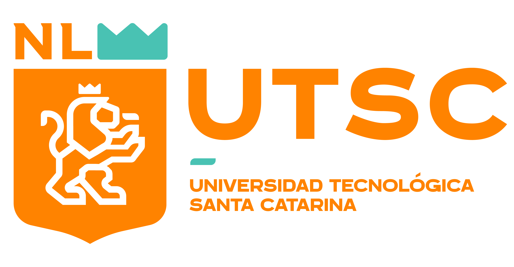

TN
Desarrollador Frontend
TecnoNova
⌖ Monterrey, Nuevo León

OPORTUNIDADES PARA LA COMUNIDAD UTSC
Explora vacantes, prácticas profesionales y oportunidades para impulsar tu carrera.
Oportunidades para ti
TecnoNova
⌖ Monterrey, Nuevo León
GrupoFSC
⌖ Santa Catarina, Nuevo León
DataLytics
⌖ Remoto
ServiTech
⌖ Monterrey, Nuevo León
No encontramos vacantes con esos criterios. Prueba cambiar los filtros.